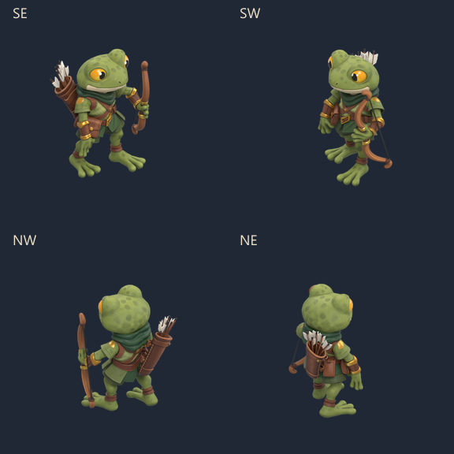
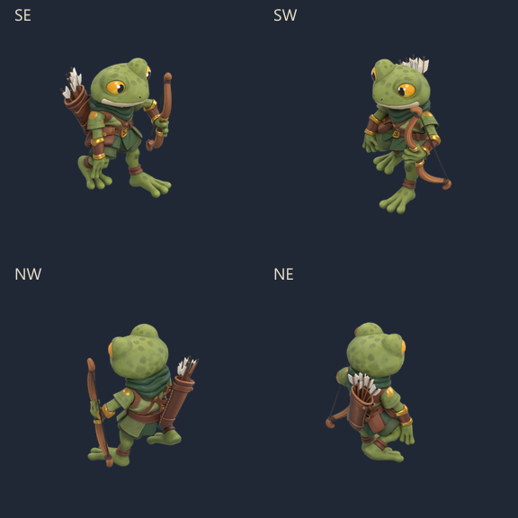
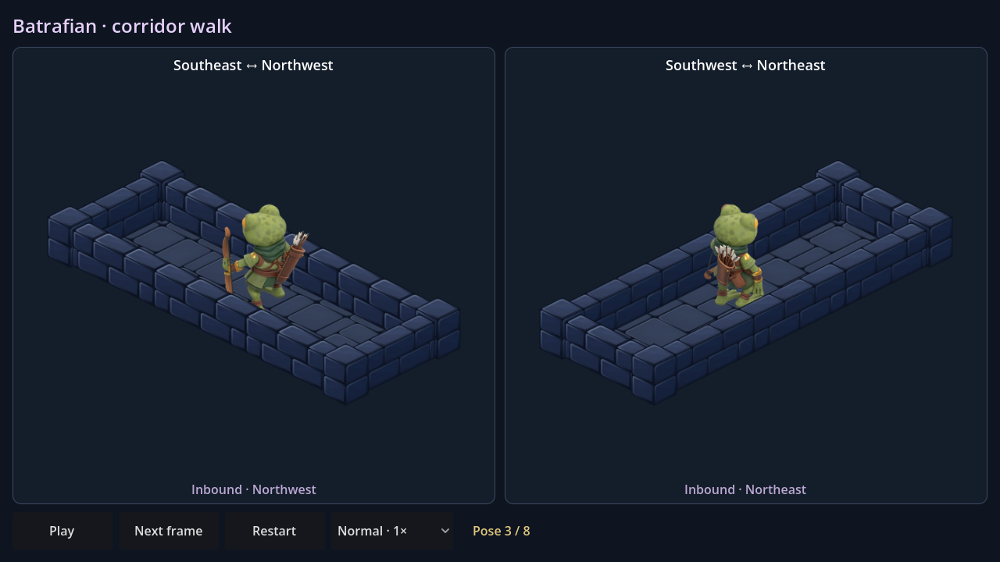
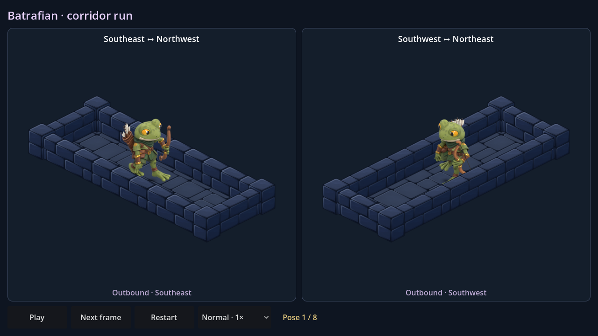

Batrafian — marche et course
Le modèle Meshy équipé, rendu en sprites complets dans les quatre directions isométriques. L'arc garde sa prise corrigée ; le carquois suit le torse. Marche vive et course à foulée plus ample, avec une phase de suspension.

Marche · 8 poses · 15 images/s
Course · 8 poses · 16 images/s
Dans Godot : ouvrir BatrafianWalk.tscn ou BatrafianRun.tscn, puis F6. Deux couloirs, les quatre directions en aller-retour, pause, image suivante et vitesse ×2.

Scène de marche, trajet retour
Scène de course, trajet aller
Source Blender · Recette et contrôles · Toutes les poses de marche · Toutes les poses de course
64 sprites de 256 px regroupés en 8 feuilles : 2,14 Mo de PNG. Contrôle des contacts, des prises et des limites d'image, puis 708 vérifications natives. Proposition dans les scènes d'essai ; les raids restent inchangés.